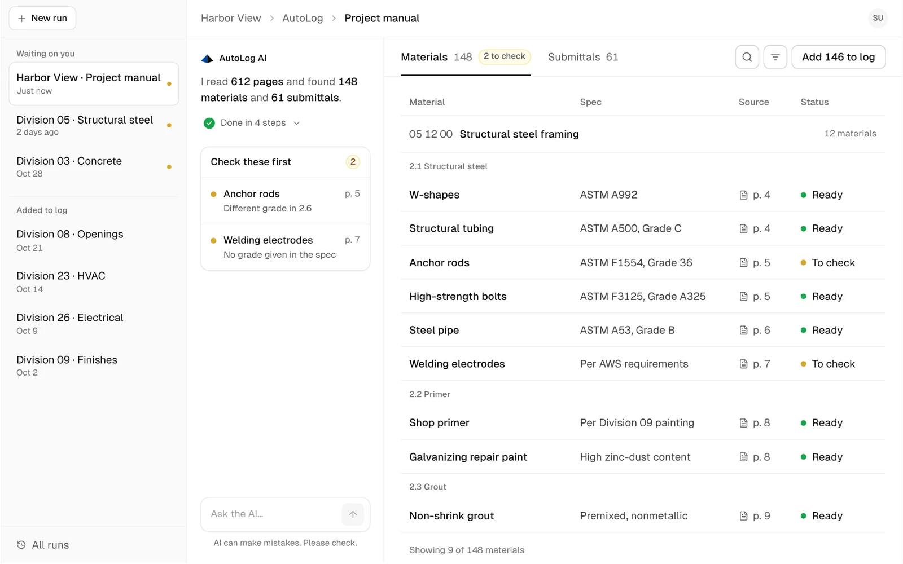

About
Engineer first. Designer now.
Five years in civil engineering gave me a habit I still use: understand the system before you change it. I bring that to every product I design, from AI agents to web and mobile apps.
5 yrs
civil engineering: site, quality and R&D
3.5 yrs
product designer at Powerplay
1.5+ yrs
senior product designer at Krane
Who I am
Start with the real work, not the screens
I started as a site engineer on building sites. Then I tested concrete and ran R&D projects. In 2021 I joined Powerplay, a construction software company, as a product designer.
Since April 2025 I’ve led design at Krane. Most of my work is deciding what the AI does on its own, and what a person checks.
- An engineer’s eye
- For what breaks. Five years on site taught me to plan for failure, not just success.
- A designer’s eye
- For people. I design for the person doing the work, not the demo.
- AI people trust
- The AI suggests. A person decides.
Why design
From the site to software
I ask the right questions to find the why behind the what.
I studied civil engineering and spent five years in it: site engineer, then concrete quality testing, then R&D projects at ESS Construction.
Along the way I taught myself design. In 2021 I joined Powerplay as a product design intern, and a few months later as a product designer. Powerplay made software for the same site teams I had worked with.
That’s why I start with the real work. I’ve stood where the users stand.
Next, I want to build AI products people can trust, in any industry.
My journey
5 years in engineering, then 5+ in design
2016 – 2021 · Site
Civil engineer · ESS Construction and others
I worked on building sites, tested concrete quality, and ran R&D projects.
- 2016 – 2017
- Site engineer
- 2017 – 2019
- Quality assurance, concrete testing
- 2019 – 2021
- R&D project manager · ESS Construction
Sep 2021 – Mar 2025 · Product
Product Designer · Powerplay
I joined as a design intern, then became its product designer. I designed its mobile app for site teams, many of them new to apps, and its tools for the office. Read the Powerplay case study

Apr 2025 – now · AI
Senior Product Designer · Krane
I design AI agents and tools for construction teams. The hard part is deciding what the AI does on its own, and what a person checks. Read the AutoLog case study

Where next